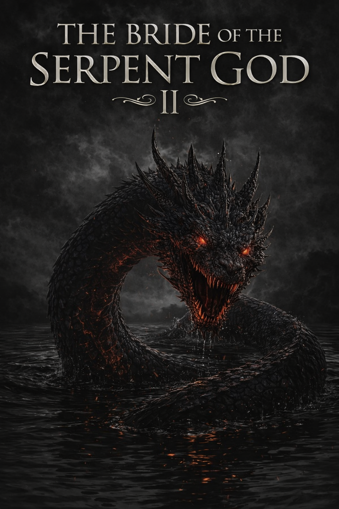
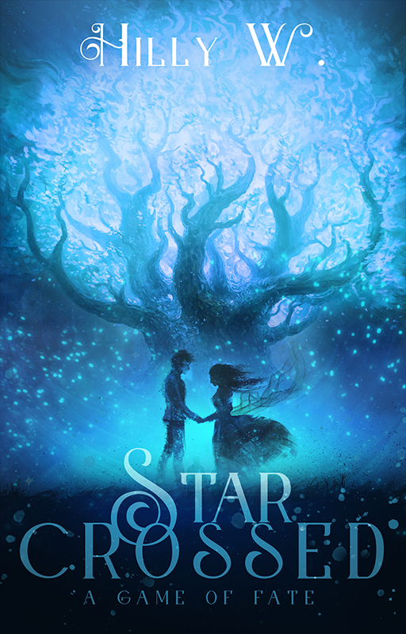
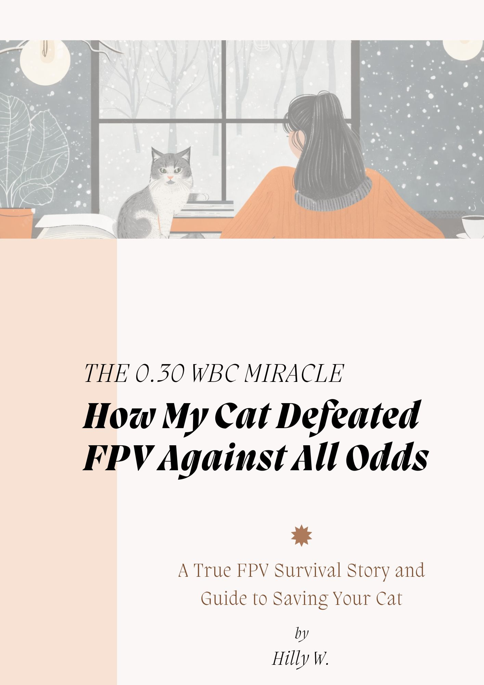

I don’t write to fill pages. I write because some stories choose their author like they were already waiting somewhere, patient as old gods, until I sat down and let them through.

The Bride of the Serpent God
She was sent to be a bride.
A goddess does not choose a political marriage. She is chosen for one. Dressed in ceremony, bound in obligation, and handed over to a Demon Lord like a gift no one actually wants to give. That is where this story begins. With a woman arriving at someone else's kingdom and quietly, stubbornly, refusing to disappear into the role they gave her.
She came to seal a peace treaty. She stayed because somewhere between the thorns and the silence, she started finding out who she was when nobody was watching.
This is a fantasy novel built from the bones of Asian folklore and the very human ache of becoming yourself in a world that already decided what you should be. There is political tension sharp enough to cut. There is a relationship that starts as an arrangement and grows into something neither of them planned for. And there is a goddess who realises, slowly and then all at once, that finding yourself is the most dangerous thing you can do in a world that prefers you obedient.

Just Press Ctrl Z
One misunderstanding. One stubborn man. One very long journey to the truth.
There is a girl. There is a boy who thinks she is also a boy. There is a campus full of people watching, a man carrying a particular brand of fear he has not yet examined, and a story that decided it was not going to take the easy road. Not even once.
He built a wall out of everything he did not understand about himself. She walked in through a gap he did not even know was there.
This is a campus romance with a twist that is also not really a twist because life has always been this complicated and this tender and this funny all at once. It is a story about a man confronting homophobia and discovering, somewhere in that confrontation, that the person he was most afraid of understanding was himself. It is about love arriving through the strangest door. It is about the courage it takes to undo what you thought you knew and start over. It is about growth that is worth every uncomfortable step.

Star-crossed:
A Game of Fate
Fate gave him nothing to start with. He built something anyway.
Nineteen years old. A delinquent reputation everyone decided to define him by. And then one day, walking back into his life like she had simply taken a very long detour, his childhood sweetheart. The one he forgot.
Fate does not warn you before it moves the pieces. It just watches to see if you are brave enough to play.
This is a coming of age story about what it means to want something desperately when life has given you every reason to stop wanting things. It is about a boy who has been handed nothing and still, stubbornly, refuses to believe that nothing is all there is. It is about the girl who comes back and the game of fate they get tangled in together. About hardship that does not soften you but sharpens you. About dreams that survive in people who have no business still having them. And about love that shows up not when you are ready, but exactly when you need it most.

How My Cat Survived FPV
A real story. Real fear. And the things I learned along the way that I wished someone had told me first.
Feline Panleukopenia Virus is one of the scariest things a cat owner can face. The information online is either too clinical to feel human or too vague to actually help. I sat in the middle of that fear with my own cat, and together, we won against the deadly plague.
I did not write this as a vet. I wrote it as someone who cried holding my cat at 2am and then figured out what to do next.
This short ebook is the guide I desperately needed and could not find. It is my cat's story from the terrifying beginning to the moment things started turning around. It is practical tips, real precautions, the things nobody warns you about, and what comes from loving an animal through the worst and watching them choose to stay. It is not a medical book. It will not replace your vet. But it will make you feel a great deal less alone in one of the loneliest situations a pet owner can find themselves in.
A note from the author herself
I write the books I needed
and could not find.
Every story here comes from a question I could not leave unanswered. A character I met in a dream and could not stop thinking about. A real experience so big it needed to become something other people could hold. I write until the story feels like it was always supposed to exist. And then I write it again until it actually does.
Get notified when new books dropLove how I tell a story?
Imagine what I can do with yours.
I bring the same depth, intention, and craft to my client work as I do to my own fiction. The worlds are different. The commitment never is.
See my services Work with me